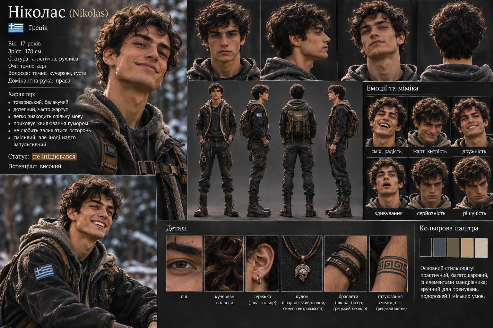

PROFILE
Sociability and courage
Nikolas is a student from Greece. He is sociable, talkative and witty, often jokes and easily connects with people. Humour helps him conceal his worries. He is brave, but can sometimes be overly impulsive and dislikes being left on the sidelines.
Origin: Greece
Age: 17 (according to the supplied visual reference)
Height: 178 cm (according to the supplied visual reference)
Build: Athletic and agile
Eyes: Dark brown
Hair: Dark, curly and thick
Dominant hand: Right
Status: Not initiated (according to the supplied visual reference)
Potential: High (according to the supplied visual reference)
PERSONALITY
Witty and impulsive
Nikolas enjoys talking, joking and quickly building rapport. He sometimes hides his worries behind humour and an easygoing manner. He is brave and does not want to stand aside, but in some situations he may act too hastily.
VISUAL APPEARANCE
Practical layered traveller's clothing, suitable for training and travel. Distinctive details include a Greek flag patch, a pendant shaped like a Spartan helmet, bracelets and a Greek meander tattoo.
REFERENCE NOTE
Age, height, appearance, status and potential are taken from the supplied visual reference. No specific abilities or training level are stated here, to avoid adding unsupported details.